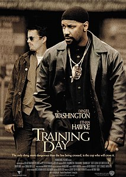
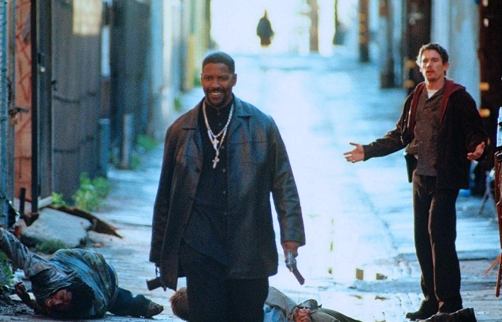
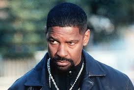
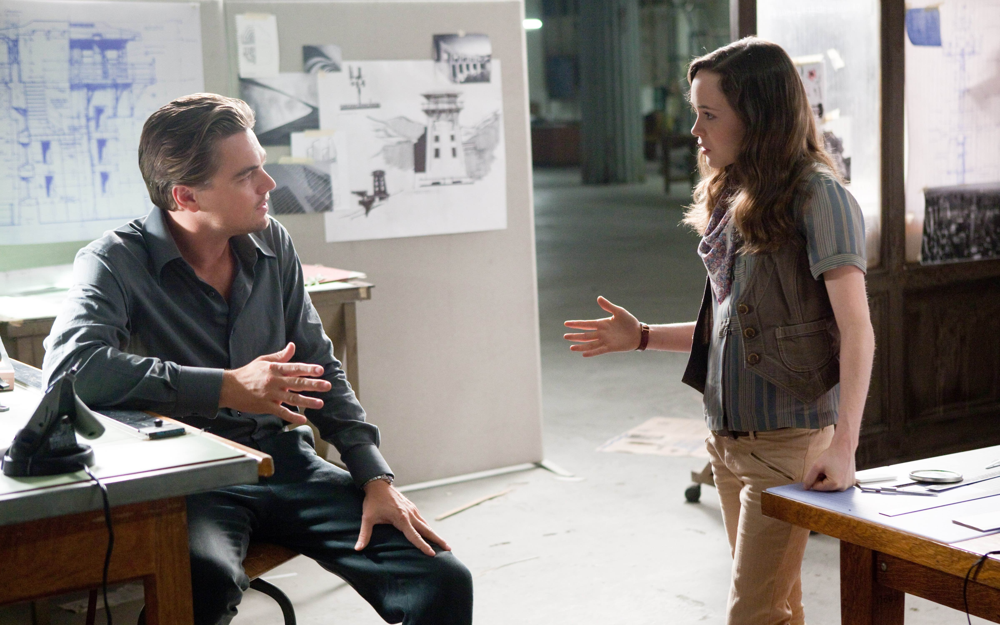
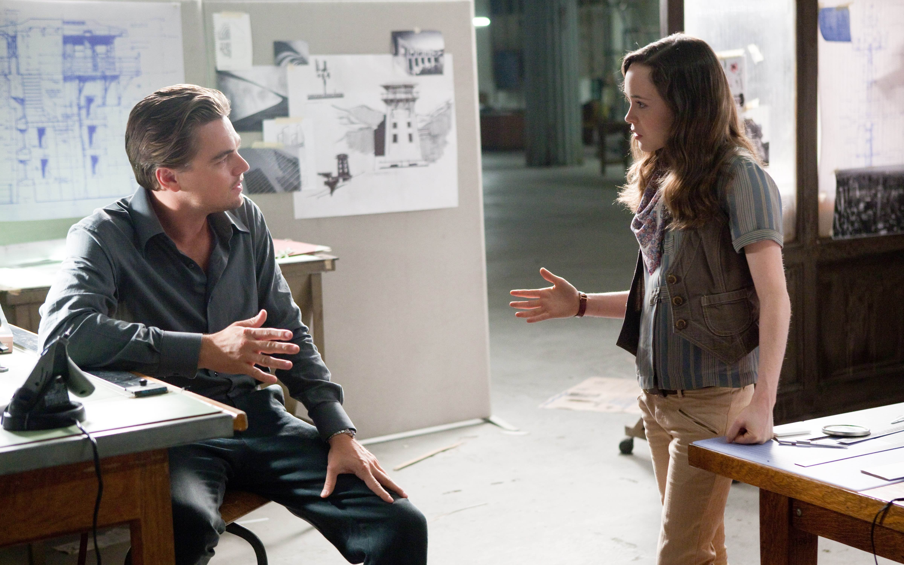

Описание лучших фильмов
Список фильмов
Фильм 1: Тренировочный день
Краткое содержание:
Джейк Хойт устраивается на работу в отдел по борьбе с наркотиками полиции Лос-Анджелеса. Его напарником становится опытный полицейский Алонзо Харисс, который в борьбе с преступностью далеко не всегда использует законные методы.
Кадры из фильма:
  Информация о фильме:
| Год | 2001 |
|---|---|
| Страна | США |
| Жанр | Триллер, Драма, Криминал |
| Режиссёр | Антуан Фукуа |
Фильм 2: Начало
Краткое содержание:
Фантастический триллер о команде профессионалов, которые проникают в сны людей, чтобы украсть или внедрить информацию. Главный герой, Дом Кобб, должен выполнить свою последнюю задачу - внедрить идею в сознание наследника огромной корпорации.
Кадры из фильма:

 

Информация о фильме:
| Год | 2010 |
|---|---|
| Страна | США, Великобритания |
| Жанр | Фантастика, Триллер |
| Режиссёр | Кристофер Нолан |
Фильм 3: Интерстеллар
Краткое содержание:
Наше время на Земле подошло к концу, команда исследователей берет на себя самую важную миссию в истории человечества; путешествуя за пределами нашей галактики, чтобы узнать есть ли у человечества будущее среди звезд.
Кадры из фильма:


Информация о фильме:
| Год | 2014 |
|---|---|
| Страна | США |
| Жанр | Научная фантастика, Приключения |
| Режиссёр | Кристофер Нолан |